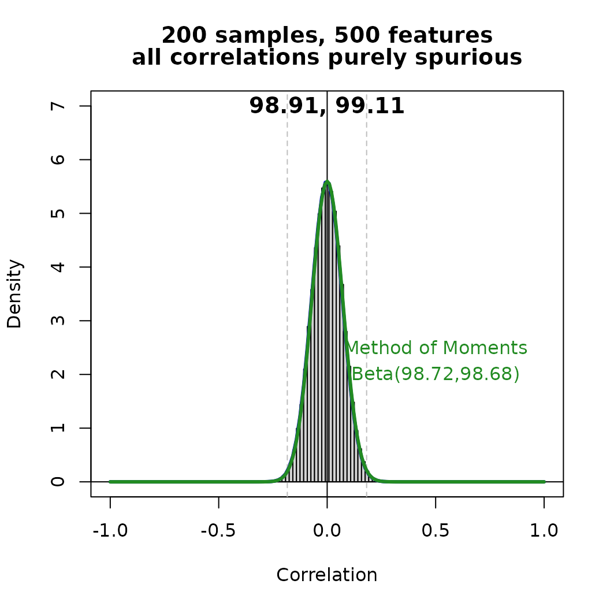
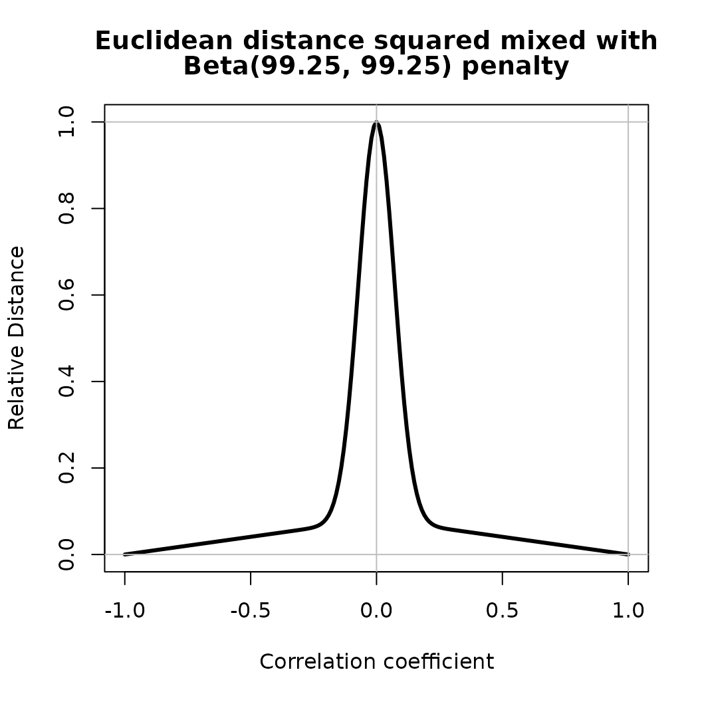
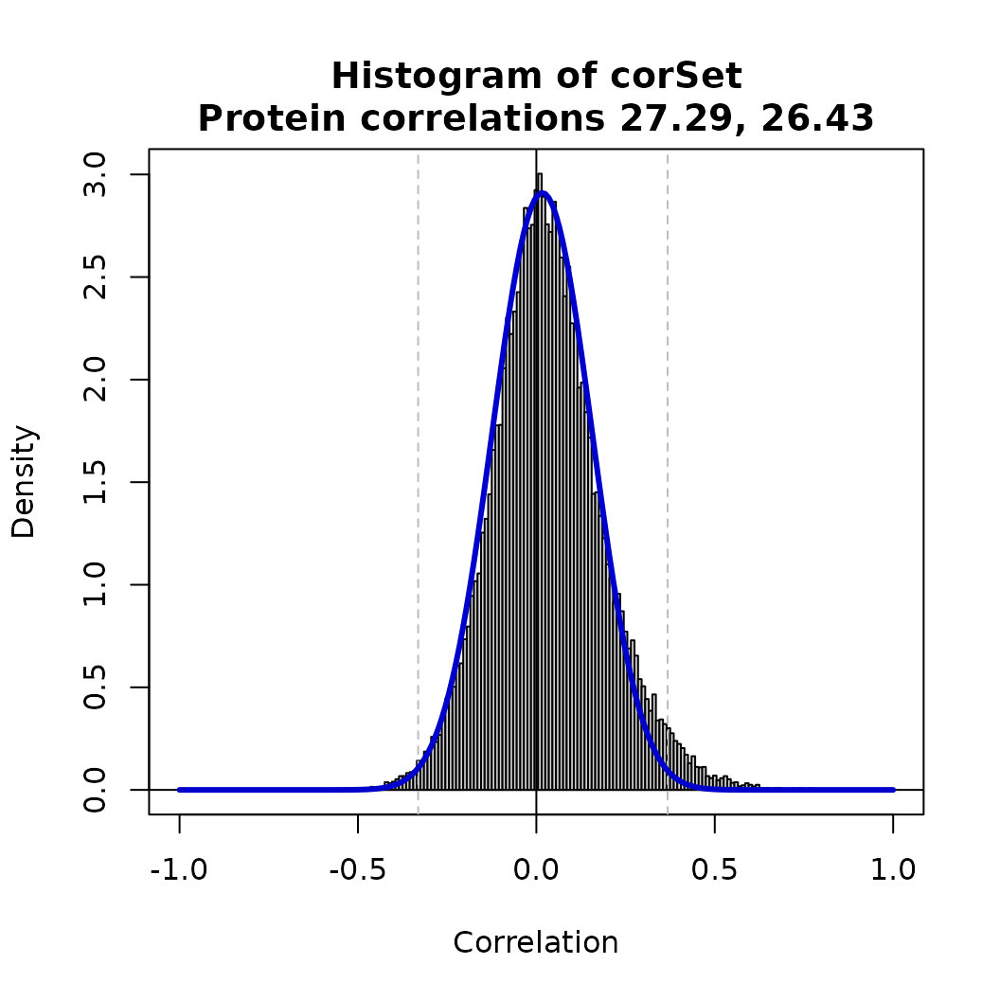
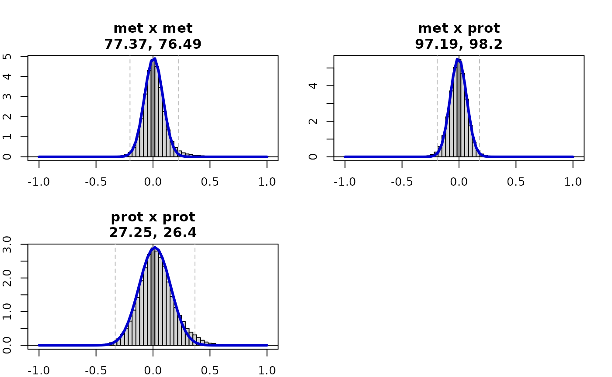
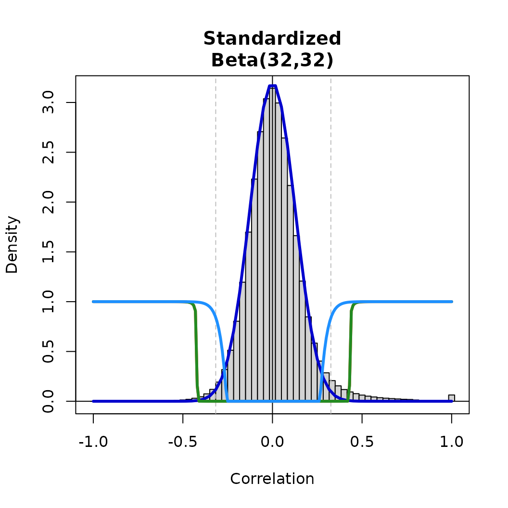
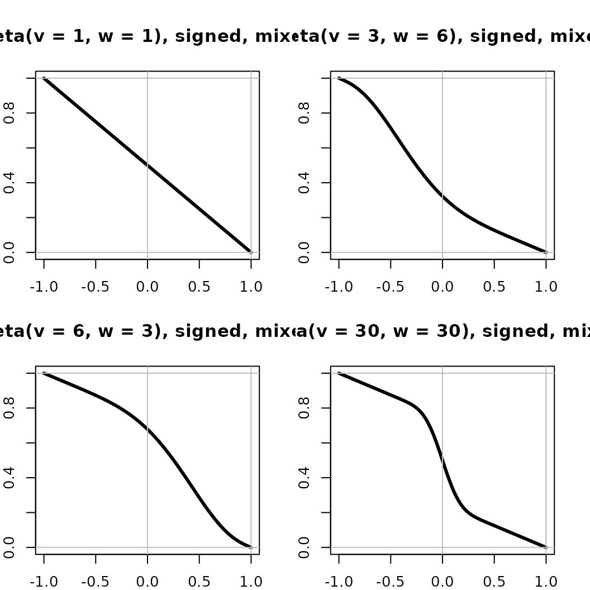
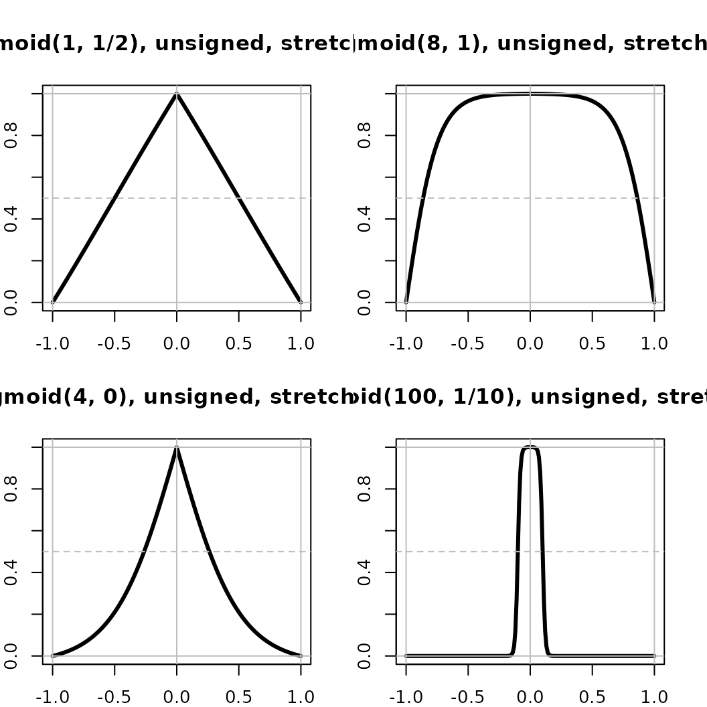

Getting-Started
Getting-Started.Rmd
library(standardcor)
#> Loading required package: qlcMatrix
#> Loading required package: Matrix
#> Loading required package: slam
#> Loading required package: sparsesvd
set.seed(11)This vignette introduces the principal functions provided by package ${\rm standardcor}$, which are intended to support correlation-based analysis of the columns of a data matrix. Our motivating interest is in correlations among the features of a set of samples, so our data matrix is oriented with the samples in rows and the features in columns; however you can analyze correlations among the samples by simply transposing the data matrix. We are therefore considering correlations among the features, each of which can be viewed as a data vector with as many dimensions as there are samples.
Null models of spurious correlations
Samples <- 200
Genes <- 500We make the assumption that the relationship among most features is not of interest; that is, the bulk of the pairwise correlations between features in the data is likely to be spurious, either due to correlations produced by the measurement process or due to ordinary variation in the data. Our analysis will begin by trying to characterize the distribution of the spurious correlations with a null model. As explained in our paper, there is a strong argument that due to the mathematical formula defining Pearson (and therefore Spearman) correlations, spurious correlations should produce a ${\rm Beta}$ distribution on the range of possible correlation values (). Since the typical range of the ${\rm Beta}$ distribution is , we can represent a distribution over this range as ${\rm Beta}$ distribution $r \thicksim 2 {\rm Beta}(v,w) - 1$, where and are the shape parameters of the ${\rm Beta}$ distribution. The intuition behind this model is that and are the expected number of yesses and nos among a total of votes, respectively, where yesses are votes for pure positive correlation () and nos are votes for pure negative correlation ().
We will start by simulating a toy dataset containing only spurious correlation, in which the data are samples measured on features, with each data value sampled independently from a standard Normal distribution. One could consider the data matrix to contain normalized transcript abundances from a transcriptomics experiment, with the measured abundance of gene on each sample following a gene-specific Lognormal distribution, after log transformation and scale normalization, . There is no signal to detect in this data, only noise; later we will make the data more complex to illustrate the working of the package.
M <- Matrix(rnorm(Samples*Genes),nrow=Samples,ncol=Genes,sparse=TRUE)
colnames(M) <- paste("G",c(1:Genes))
rownames(M) <- paste("S",c(1:Samples))
dim(M)
#> [1] 200 500Step 1: Computing Correlations
We provide the function ${\rm standardcor::SparseSpearmanCor2}()$ to compute the correlation matrix primarily for efficiency, as these data matrices can be quite large; the number of transcripts can easily be or more. The algorithm in ${\rm SparseSpearmanCor2()}$, due to Saket Choudhary of Mumbai, India (https://github.com/saketkc/blog/blob/main/2022-03-10/SparseSpearmanCorrelation2.ipynb), is highly efficient compared to other methods of computing Spearman correlations. Despite its sparse implementation, we find it is at least as efficient as other common methods even on dense data matrices. Use of this function is entirely optional, the rest of the ${\rm standardcor}$ package does not depend on how the correlations are computed. Although it is our opinion that ’omics data collected from biological samples tends to have enough meaningful outliers that rank correlation is preferable, the theory on which this package is based is perfectly appropriate for Pearson correlations as well.
Z <- SparseSpearmanCor2(M)
dim(Z)
#> [1] 500 500
colnames(Z) <- colnames(M)
rownames(Z) <- colnames(Z)We now have a data matrix and the corresponding correlation matrix .
Step 2: Estimating the distribution of spurious correlations
We provide the function ${\rm standardcor::estimateShape}()$ for this purpose. Under the assumption that the correlations between most pairs of variables are spurious, this heuristic function estimates the parameters of a Beta distribution $2 {\rm Beta}(v,w) - 1$ which fits the bulk of the correlations; that is, it attempts to fit the distribution best in the vicinity of the mode. This is similar to making a robust estimate, as it is intended to work in the presence of outliers; however in real data whether any particular value should be considered an outlier is rarely known, and this function therefore attempts to solve an ill-defined problem. For use in subsequent steps, what is important is that the shape parameters and provide an excellent fit to the correlation values the researcher considers spurious, not whether this function is used to find them. To permit the behavior of this function to be adjusted and evaluated, we provide parameters ${\rm left}$ and ${\rm right}$, which shift the fitted mode in the indicated direction. As rough guidelines for adjustments, the mode of $2 {\rm Beta}(v,w) - 1$ is $2 {v-1 \over v+w-2}-1$, and for a given mode, the sum governs the width of the distribution in proportion to $1 \over \sqrt{v+w}$, i.e taller and narrower as the sum increases. Increasing or decreasing ${\rm right}$ increases or decreases , and likewise ${\rm left}$ adjusts . The effect of the adjustments can be assessed using parameter ${\rm plot = TRUE}$.
One standard way to estimate the parameters of a ${\rm Beta}$ distribution, by computing the mean and variance, is shown for comparison. Since this dataset was simulated with no outliers, the two methods produce very similar estimates. There are unique, non-identical correlations in , and theoretically the parameters of this distribution should be ; the estimates are reasonably close to this value, as seen in the fit of the curves to the data.
# row(Z) < col(Z): the correlation matrix is square and symmetric, with diagonal 1.
# This condition limits the set of correlations that are modeled to the upper right triangle, which
# constitutes the nonredundant, non-self correlations among the variables.
beta.shape <- estimateShape(Z[row(Z) < col(Z)], plot=TRUE, ylim=c(0,7), fine=60,
main=c(paste(Samples,"samples,",Genes,"features"),
"all correlations purely spurious"))
title(paste(round(beta.shape,2),collapse=", "),line=-1)
#text(x=-0.5,y=2.0,labels=paste("D/2 - 1 = ",round(Genes/2-1, 2)),adj = 1/2)
R <- c(-100:100)/100 ; R <-ifelse(-1 < R, ifelse(R < 1, R, 1), -1) # Ensure R in [-1,1]
x <- (1+Z[row(Z) < col(Z)])/2
x.mu <- mean(x)
x.var <- var(x)
z.mm <- x.mu*(1-x.mu) / x.var - 1
v.mm <- x.mu * z.mm
w.mm <- (1-x.mu) * z.mm
lines(R,dbeta((1+R)/2, v.mm, w.mm)/2, lwd=3, col='forestgreen')
text(x=0.5,y=c(2.5,2),
labels=c("Method of Moments",paste("Beta(",round(v.mm, 2),",",round(w.mm,2),")",sep='')),
col='forestgreen',adj = 1/2)
corr <- 0.5
pct <- 20For the second example we modify the test data, mixing a Bias vector (copied the required number of times) with the first of the features. The biased features are therefore correlated by the weight given to the Bias vector, in this case , in addition to of their original spurious correlation. The pairwise correlations among these features, which are roughly of the unique, non-identical pairs, are a simulated “signal” relative to the remaining roughly purely spurious correlations. This example shows why the Method of Moments could not be used to estimate the null model in the presence of outliers.
# Adjusted Step 1
M2 <- M
dim(M2)
#> [1] 200 500
Altered <- round(Genes*pct/100) # The first Altered variables will be intercorrelated
Altered <- max(1,min(Genes,Altered))
Bias <- matrix(rnorm(Samples*Altered),nrow=Samples,ncol=Altered)
M2[,c(1:Altered)] <- (1-corr) * M2[,c(1:Altered)] + corr*Bias
length(rownames(M2))
#> [1] 200
length(colnames(M2))
#> [1] 500
Z2 <- SparseSpearmanCor2(M2)
# Repeat Step 2
beta.shape <- estimateShape(Z2[row(Z2) < col(Z2)], plot=TRUE, ylim=c(0,7), fine=60,
main=c(paste(Samples,"samples,",Genes,"features"),
paste(Altered,"correlated features, r =",corr)))
title(paste(round(beta.shape,2),collapse=", "),line=-1)
#text(x=-0.5,y=2.0,labels=paste("D/2 - 1 = ",round(Genes/2-1, 2)),adj = 1/2)
R <- c(-100:100)/100 ; R <-ifelse(-1 < R, ifelse(R < 1, R, 1), -1) # Ensure R in [-1,1]
x <- (1+Z2[row(Z2) < col(Z2)])/2
x.mu <- mean(x)
x.var <- var(x)
z.mm <- x.mu*(1-x.mu) / x.var - 1
v.mm <- x.mu * z.mm
w.mm <- (1-x.mu) * z.mm
lines(R,dbeta((1+R)/2, v.mm, w.mm)/2, lwd=3, col='forestgreen')
text(x=0.5,y=c(5,4.25),
labels=c("Method of Moments",paste("Beta(",round(v.mm, 2),",",round(w.mm,2),")",sep='')),
col='forestgreen',adj = 1/2)In our third example, we show the difference between using the null model directly as a distance versus using the null model as a penalty on top of the typical Euclidean distance corresponding to a corrolation coefficient. The betaDistance() function penalizes correlation coefficients which are likely under the null model, but doesn’t penalize correlation coefficients which are larger than those predicted by the null model. Without including the Euclidean distance, there is essentially no distance between highly correlated pairs; but by including the Euclidean distance, highly correlated pairs can still be separated by their degree of correlation.
v <- mean(beta.shape) # Expect v = (D-1)/2 = 24.5
v.name <- paste("Beta(",paste(round(c(v,v),2),collapse=", "),")",sep='')
plot(R,betaDistance(R, v, v, mix=0), type='l',lwd=3,
xlab="Correlation coefficient", ylab="Distance Penalty",
main = paste(v.name,"penalty"))
abline(h=c(-1:1),col='grey') ; abline(v=c(0,1),col='grey')
plot(R,betaDistance(R, v, v, mix=1),type='l',lwd=3,
xlab="Correlation coefficient", ylab="Relative Distance",
main = c("Euclidean distance squared mixed with",
paste(v.name, "penalty")))
abline(h=c(-1:1),col='grey') ; abline(v=c(0,1),col='grey')
Multi-omic data example
Z.met <- SparseSpearmanCor2(as.matrix(synth_LC[['Metabolomics']]))
dim(Z.met)
#> [1] 2647 2647
length(which(is.na(Z.met)))
#> [1] 0
range(Z.met,na.rm=TRUE)
#> [1] -0.8189155 1.0000000
shape.Met <- estimateShape(Z.met[row(Z.met) < col(Z.met)], plot=TRUE)
title(paste('Metabolite correlations',paste(round(shape.Met,2),collapse=", ")),line=0.5)
Z.prot <- SparseSpearmanCor2(as.matrix(synth_LC[['Proteomics']]))Proteomics correlation matrix 284 x 284
0 na values
-0.641119940479762 <= cor <= 1
shape.prot <- estimateShape(Z.prot[row(Z.prot) < col(Z.prot)], plot=TRUE)
title(paste('Protein correlations',paste(round(shape.prot,2),collapse=", ")),line=0.5)
N <- dim(synth_LC[['Metabolomics']])[2]
Met <- as.matrix(synth_LC[['Metabolomics']][,2:N])
rownames(Met) <- paste('S',synth_LC[['Metabolomics']]$subjectID,sep='')
N <- dim(synth_LC[['Proteomics']])[2]
Prot <- as.matrix(synth_LC[['Proteomics']][,2:N])
rownames(Prot) <- paste('S',synth_LC[['Proteomics']]$subjectID,sep='')
par(mar = c(2, 2, 4, 2), mfrow=c(2,2))
L <- multiOmicModel(list(met = Met, prot = Prot), plot=TRUE, annotate=TRUE, common=TRUE, fine=30)
v.std <- 32
Z <- standardizeFromModel(L$modelL, L$analyteL, v.std)
adjTable1 <- nullModelAdjacencyTable(Z[row(Z) < col(Z)], v.std, scale=1)
adjTable2 <- nullModelAdjacencyTable(Z[row(Z) < col(Z)], v.std)
adjTable3 <- nullModelAdjacencyTable(Z[row(Z) < col(Z)], v.std, scale=3)
shape <- estimateShape(Z[row(Z) < col(Z)], plot=TRUE, main = "Standardized", fine=30)
title(paste("Beta(",v.std,",",v.std,")",sep=''), line = 0.5)
Bs <- c(-100:100)/100
lines(Bs,interpolatedAdjacency(Bs,adjTable1),lwd=3,col='orangered')
lines(Bs,interpolatedAdjacency(Bs,adjTable2),lwd=3,col='forestgreen')
lines(Bs,interpolatedAdjacency(Bs,adjTable3),lwd=3,col='dodgerblue')
Beta distance function
R <- c(-100:100)/100 ; R <- ifelse(R < -1, -1, ifelse(1 < R, 1, R))
par(mar = c(2, 2, 4, 2), mfrow=c(2,2))
plot(R,betaDistance(R,1,1,mix=0,unsigned=FALSE),type='l',lwd=3, ylim=c(0,1),
xlab="Correlation coefficient", ylab="Beta Distance",
main = "Beta(v = 1, w = 1), signed, unmixed")
abline(h=c(-1:1),col='grey') ; abline(v=c(0,1),col='grey')
plot(R,betaDistance(R, 3, 6, mix=0, unsigned=FALSE),type='l',lwd=3, ylim=c(0,1),
xlab="Correlation coefficient", ylab="Beta Distance",
main = "Beta(v = 3, w = 6), signed, unmixed")
abline(h=c(-1:1),col='grey') ; abline(v=c(0,1),col='grey')
plot(R,betaDistance(R, 6, 3, mix=0,unsigned=FALSE),type='l',lwd=3, ylim=c(0,1),
xlab="Correlation coefficient", ylab="Beta Distance",
main = "Beta(v = 6, w = 3), signed, unmixed")
abline(h=c(-1:1),col='grey') ; abline(v=c(0,1),col='grey')
plot(R,betaDistance(R, 30, 30,mix=0,unsigned=FALSE),type='l',lwd=3, ylim=c(0,1),
xlab="Correlation coefficient", ylab="Beta Distance",
main = "Beta(v = 30, w = 30), signed, unmixed")
abline(h=c(-1:1),col='grey') ; abline(v=c(0,1),col='grey')
R <- c(-100:100)/100 ; R <- ifelse(R < -1, -1, ifelse(1 < R, 1, R))
par(mar = c(2, 2, 4, 2), mfrow=c(2,2))
plot(R,betaDistance(R,1,1,mix=1,unsigned=FALSE),type='l',lwd=3,
xlab="Correlation coefficient", ylab="Beta Distance",
main = "Beta(v = 1, w = 1), signed, mixed")
abline(h=c(-1:1),col='grey') ; abline(v=c(0,1),col='grey')
plot(R,betaDistance(R, 3, 6, mix=1, unsigned=FALSE),type='l',lwd=3,
xlab="Correlation coefficient", ylab="Beta Distance",
main = "Beta(v = 3, w = 6), signed, mixed")
abline(h=c(-1:1),col='grey') ; abline(v=c(0,1),col='grey')
plot(R,betaDistance(R, 6, 3, mix=1,unsigned=FALSE),type='l',lwd=3,
xlab="Correlation coefficient", ylab="Beta Distance",
main = "Beta(v = 6, w = 3), signed, mixed")
abline(h=c(-1:1),col='grey') ; abline(v=c(0,1),col='grey')
plot(R,betaDistance(R, 30, 30,mix=1,unsigned=FALSE),type='l',lwd=3,
xlab="Correlation coefficient", ylab="Beta Distance",
main = "Beta(v = 30, w = 30), signed, mixed")
abline(h=c(-1:1),col='grey') ; abline(v=c(0,1),col='grey')
R <- c(-100:100)/100 ; R <- ifelse(R < -1, -1, ifelse(1 < R, 1, R))
par(mar = c(2, 2, 4, 2), mfrow=c(2,2))
plot(R,betaDistance(R,1,1,mix=0),type='l',lwd=3, ylim=c(0,1),
xlab="Correlation coefficient", ylab="Beta Distance",
main = "Beta(v = 1, w = 1), unsigned, unmixed")
abline(h=c(-1:1),col='grey') ; abline(v=c(0,1),col='grey')
plot(R,betaDistance(R, 3, 6, mix=0),type='l',lwd=3, ylim=c(0,1),
xlab="Correlation coefficient", ylab="Beta Distance",
main = "Beta(v = 3, w = 6), unsigned, unmixed")
abline(h=c(-1:1),col='grey') ; abline(v=c(0,1),col='grey')
plot(R,betaDistance(R, 6, 3, mix=0),type='l',lwd=3, ylim=c(0,1),
xlab="Correlation coefficient", ylab="Beta Distance",
main = "Beta(v = 6, w = 3), unsigned, unmixed")
abline(h=c(-1:1),col='grey') ; abline(v=c(0,1),col='grey')
plot(R,betaDistance(R, 30, 30,mix=0),type='l',lwd=3, ylim=c(0,1),
xlab="Correlation coefficient", ylab="Beta Distance",
main = "Beta(v = 30, w = 30), unsigned, unmixed")
abline(h=c(-1:1),col='grey') ; abline(v=c(0,1),col='grey')
R <- c(-100:100)/100 ; R <- ifelse(R < -1, -1, ifelse(1 < R, 1, R))
par(mar = c(2, 2, 4, 2), mfrow=c(2,2))
plot(R,betaDistance(R,1,1),type='l',lwd=3, ylim=c(0,1),
xlab="Correlation coefficient", ylab="Beta Distance",
main = "Beta(v = 1, w = 1), unsigned, mixed")
abline(h=c(-1:1),col='grey') ; abline(v=c(0,1),col='grey')
plot(R,betaDistance(R, 3, 6),type='l',lwd=3, ylim=c(0,1),
xlab="Correlation coefficient", ylab="Beta Distance",
main = "Beta(v = 3, w = 6), unsigned, mixed")
abline(h=c(-1:1),col='grey') ; abline(v=c(0,1),col='grey')
plot(R,betaDistance(R, 6, 3),type='l',lwd=3, ylim=c(0,1),
xlab="Correlation coefficient", ylab="Beta Distance",
main = "Beta(v = 6, w = 3), unsigned, mixed")
abline(h=c(-1:1),col='grey') ; abline(v=c(0,1),col='grey')
plot(R,betaDistance(R, 30, 30),type='l',lwd=3, ylim=c(0,1),
xlab="Correlation coefficient", ylab="Beta Distance",
main = "Beta(v = 30, w = 30), unsigned, mixed")
abline(h=c(-1:1),col='grey') ; abline(v=c(0,1),col='grey')
Power distance function
R <- c(-100:100)/100 ; R <- ifelse(R < -1, -1, ifelse(1 < R, 1, R))
par(mar = c(2, 2, 4, 2), mfrow=c(2,2))
plot(R,powerDistance(R,k=3,unsigned=FALSE),type='l',lwd=3, ylim=c(0,1),
xlab="Correlation coefficient", ylab="Power Distance",
main = "k = 3, unsigned")
abline(h=c(-1:1),col='grey') ; abline(v=c(0,1),col='grey')
plot(R,powerDistance(R,k=6, unsigned=FALSE),type='l',lwd=3, ylim=c(0,1),
xlab="Correlation coefficient", ylab="Power Distance",
main = "k = 6, unsigned")
abline(h=c(-1:1),col='grey') ; abline(v=c(0,1),col='grey')
plot(R,powerDistance(R,k=12, unsigned=FALSE),type='l',lwd=3, ylim=c(0,1),
xlab="Correlation coefficient", ylab="Power Distance",
main = "k = 12, unsigned")
abline(h=c(-1:1),col='grey') ; abline(v=c(0,1),col='grey')
plot(R,powerDistance(R,k=0.5, unsigned=FALSE),type='l',lwd=3, ylim=c(0,1),
xlab="Correlation coefficient", ylab="Power Distance",
main = "k = 0.5, unsigned")
abline(h=c(-1:1),col='grey') ; abline(v=c(0,1),col='grey')
R <- c(-100:100)/100 ; R <- ifelse(R < -1, -1, ifelse(1 < R, 1, R))
par(mar = c(2, 2, 4, 2), mfrow=c(2,2))
plot(R,powerDistance(R,k=3),type='l',lwd=3, ylim=c(0,1),
xlab="Correlation coefficient", ylab="Power Distance",
main = "k = 3, unsigned")
abline(h=c(-1:1),col='grey') ; abline(v=c(0,1),col='grey')
plot(R,powerDistance(R,k=6),type='l',lwd=3, ylim=c(0,1),
xlab="Correlation coefficient", ylab="Power Distance",
main = "k = 6, unsigned")
abline(h=c(-1:1),col='grey') ; abline(v=c(0,1),col='grey')
plot(R,powerDistance(R,k=12),type='l',lwd=3, ylim=c(0,1),
xlab="Correlation coefficient", ylab="Power Distance",
main = "k = 12, unsigned")
abline(h=c(-1:1),col='grey') ; abline(v=c(0,1),col='grey')
plot(R,powerDistance(R,k=0.5),type='l',lwd=3, ylim=c(0,1),
xlab="Correlation coefficient", ylab="Power Distance",
main = "k = 0.5, unsigned")
abline(h=c(-1:1),col='grey') ; abline(v=c(0,1),col='grey')Sigmoid distance function
R <- c(-100:100)/100 ; R <- ifelse(R < -1, -1, ifelse(1 < R, 1, R))
par(mar = c(2, 2, 4, 2), mfrow=c(2,2))
plot(R,sigmoidDistance(R,alpha=5,tau0 = 0,unsigned=FALSE),type='l',lwd=3,
xlab="Correlation coefficient", ylab="Sigmoid Distance",
main = "sigmoid(5, 0), unsigned",ylim=c(0,1))
abline(v=c(-1:1),col='grey') ; abline(h=c(0,1),col='grey')
abline(h=0.5, lty=2, col='grey')
plot(R,sigmoidDistance(R,alpha=5,tau0 = 1,unsigned=FALSE),type='l',lwd=3,
xlab="Correlation coefficient", ylab="Sigmoid Distance",
main = "sigmoid(5, 1), unsigned",ylim=c(0,1))
abline(v=c(-1:1),col='grey') ; abline(h=c(0,1),col='grey')
abline(h=0.5, lty=2, col='grey')
plot(R,sigmoidDistance(R,alpha=25,tau0 = -0.5,unsigned=FALSE),type='l',lwd=3,
xlab="Correlation coefficient", ylab="Sigmoid Distance",
main = "sigmoid(25, -1/2), unsigned",ylim=c(0,1))
abline(v=c(-1:1),col='grey') ; abline(h=c(0,1),col='grey')
abline(h=0.5, lty=2, col='grey')
plot(R,sigmoidDistance(R,alpha=5,tau0 = 1,unsigned=FALSE, stretch=TRUE),type='l',lwd=3,
xlab="Correlation coefficient", ylab="Sigmoid Distance",
main = "sigmoid(5, 1), unsigned, stretched",ylim=c(0,1))
abline(v=c(-1:1),col='grey') ; abline(h=c(0,1),col='grey')
abline(h=0.5, lty=2, col='grey')
R <- c(-100:100)/100 ; R <- ifelse(R < -1, -1, ifelse(1 < R, 1, R))
par(mar = c(2, 2, 4, 2), mfrow=c(2,2))
plot(R,sigmoidDistance(R,alpha=4,tau0 = 1/4,unsigned=FALSE),type='l',lwd=3,
xlab="Correlation coefficient", ylab="Sigmoid Distance",
main = "sigmoid(4, 1/4), unsigned",ylim=c(0,1))
abline(v=c(-1:1),col='grey') ; abline(h=c(0,1),col='grey')
abline(h=0.5, lty=2, col='grey')
plot(R,sigmoidDistance(R,alpha=10,tau0 = -1/4,unsigned=FALSE),type='l',lwd=3,
xlab="Correlation coefficient", ylab="Sigmoid Distance",
main = "sigmoid(10, -1/4), unsigned",ylim=c(0,1))
abline(v=c(-1:1),col='grey') ; abline(h=c(0,1),col='grey')
abline(h=0.5, lty=2, col='grey')
plot(R,sigmoidDistance(R,alpha=20,tau0 = 1/4,unsigned=FALSE),type='l',lwd=3,
xlab="Correlation coefficient", ylab="Sigmoid Distance",
main = "sigmoid(20, 1/4), unsigned",ylim=c(0,1))
abline(v=c(-1:1),col='grey') ; abline(h=c(0,1),col='grey')
abline(h=0.5, lty=2, col='grey')
plot(R,sigmoidDistance(R,alpha=100,tau0 = -1/4,unsigned=FALSE),type='l',lwd=3,
xlab="Correlation coefficient", ylab="Sigmoid Distance",
main = "sigmoid(100, -1/4), unsigned",ylim=c(0,1))
abline(v=c(-1:1),col='grey') ; abline(h=c(0,1),col='grey')
abline(h=0.5, lty=2, col='grey')
R <- c(-100:100)/100 ; R <- ifelse(R < -1, -1, ifelse(1 < R, 1, R))
par(mar = c(2, 2, 4, 2), mfrow=c(2,2))
plot(R,sigmoidDistance(R,alpha=1,tau0 = 1/2,unsigned=TRUE,stretch=TRUE),type='l',lwd=3,
xlab="Correlation coefficient", ylab="Sigmoid Distance",
main = "sigmoid(1, 1/2), unsigned, stretched",ylim=c(0,1))
abline(v=c(-1:1),col='grey') ; abline(h=c(0,1),col='grey')
abline(h=0.5, lty=2, col='grey')
plot(R,sigmoidDistance(R,alpha=8,tau0 = 1,unsigned=TRUE,stretch=TRUE),type='l',lwd=3,
xlab="Correlation coefficient", ylab="Sigmoid Distance",
main = "sigmoid(8, 1), unsigned, stretched",ylim=c(0,1))
abline(v=c(-1:1),col='grey') ; abline(h=c(0,1),col='grey')
abline(h=0.5, lty=2, col='grey')
plot(R,sigmoidDistance(R,alpha=4,tau0 = 0,unsigned=TRUE,stretch=TRUE),type='l',lwd=3,
xlab="Correlation coefficient", ylab="Sigmoid Distance",
main = "sigmoid(4, 0), unsigned, stretched",ylim=c(0,1))
abline(v=c(-1:1),col='grey') ; abline(h=c(0,1),col='grey')
abline(h=0.5, lty=2, col='grey')
plot(R,sigmoidDistance(R,alpha=100,tau0 = 1/10,unsigned=TRUE,stretch=TRUE),type='l',lwd=3,
xlab="Correlation coefficient", ylab="Sigmoid Distance",
main = "sigmoid(100, 1/10), unsigned, stretched",ylim=c(0,1))
abline(v=c(-1:1),col='grey') ; abline(h=c(0,1),col='grey')
abline(h=0.5, lty=2, col='grey')